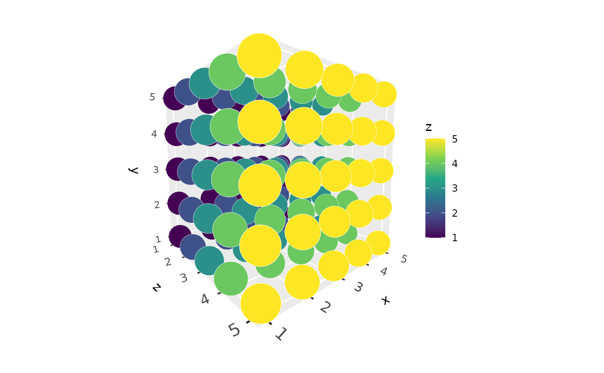
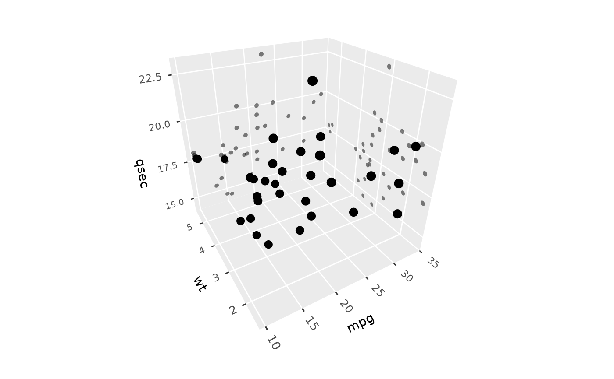
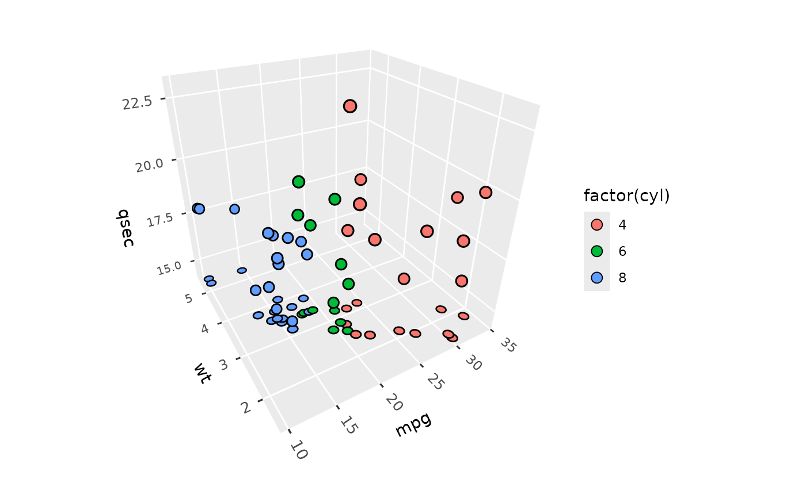

geom_point_3d() creates scatter plots in 3D space with automatic depth-based
size scaling. Points closer to the viewer appear larger, while points farther
away appear smaller, creating realistic perspective effects.
Usage
geom_point_3d(
mapping = NULL,
data = NULL,
stat = StatPoint3D,
position = "identity",
...,
annotate = deprecated(),
na.rm = FALSE,
sort_method = deprecated(),
scale_depth = TRUE,
on_top = FALSE,
flat = FALSE,
raw_points = deprecated(),
ref_lines = deprecated(),
ref_points = deprecated(),
ref_faces = deprecated(),
ref_circle_radius = deprecated(),
ref_circle_vertices = deprecated(),
ref_line_color = deprecated(),
ref_line_colour = deprecated(),
ref_line_linewidth = deprecated(),
ref_line_linetype = deprecated(),
ref_line_alpha = deprecated(),
ref_point_color = deprecated(),
ref_point_colour = deprecated(),
ref_point_fill = deprecated(),
ref_point_size = deprecated(),
ref_point_alpha = deprecated(),
ref_point_stroke = deprecated(),
ref_point_shape = deprecated(),
inherit.aes = TRUE,
show.legend = NA
)
stat_point_3d(
mapping = NULL,
data = NULL,
geom = GeomPoint3D,
position = "identity",
...,
na.rm = FALSE,
sort_method = deprecated(),
scale_depth = TRUE,
raw_points = deprecated(),
ref_lines = deprecated(),
ref_points = deprecated(),
ref_faces = deprecated(),
ref_circle_radius = deprecated(),
ref_circle_vertices = deprecated(),
ref_line_color = deprecated(),
ref_line_colour = deprecated(),
ref_line_linewidth = deprecated(),
ref_line_linetype = deprecated(),
ref_line_alpha = deprecated(),
ref_point_color = deprecated(),
ref_point_colour = deprecated(),
ref_point_fill = deprecated(),
ref_point_size = deprecated(),
ref_point_alpha = deprecated(),
ref_point_stroke = deprecated(),
ref_point_shape = deprecated(),
inherit.aes = TRUE,
show.legend = NA
)Arguments
- mapping
Set of aesthetic mappings created by
aes(). In addition to the standard point aesthetics,geom_point_3d()requires x, y, and z coordinates.- data
The data to be displayed in this layer.
- stat
The statistical transformation to use on the data. Defaults to
"point_3d".- position
Position adjustment, defaults to "identity". Use
position_on_face()to place points on faces of the panel.- ...
Other arguments passed on to
ggplot2::layer().- annotate
Deprecated. Add annotations to the plot with
+ annotate_3d()instead. All 3D layers in a panel are depth-sorted together, so annotations no longer need to be embedded in a layer.- na.rm
If
FALSE, missing values are removed with a warning.- sort_method
Deprecated. All 3D layers in a panel are now depth-sorted together, pairwise, so this has no effect. See sorting_methods.
- scale_depth
Controls depth-based scaling, drawing closer elements larger or thicker and farther ones smaller or thinner.
TRUE(the default) applies full scaling andFALSEdisables it; a number sets the strength directly, where1matchesTRUE,0matchesFALSE, values below 1 subdue the effect and values above 1 exaggerate it. This affects the layer only; usecoord_3d(scale_depth = )for panel and axis components.- on_top
If
TRUE, the layer is drawn on top of the rest of the scene instead of being depth-sorted with it, so other geometry never hides or cuts it, e.g. to keep labels legible. The layers drawn on top are depth-sorted among themselves. DefaultFALSE.- flat
If
TRUE, points placed on a face of the panel byposition_on_face()are drawn as markers lying flat in that face, like shadows, rather than as symbols facing the viewer. Flat markers match the size of ordinary markers at the centre of the panel, and are drawn in true perspective, outlines included, whateverscale_depthis. They can be open, solid, or filled circles, squares, diamonds, or triangles (shapes 0, 1, 2, 5, 6, and 15 to 25). Points not on a face (e.g. withposition_on_face(c("3D", "zmin"))) are drawn as usual. DefaultFALSE.- raw_points, ref_lines, ref_points, ref_faces, ref_circle_radius, ref_circle_vertices
Deprecated. Reference elements are now drawn by separate layers: drop lines by
geom_dropline_3d(), and reference points bygeom_point_3d()withposition = position_on_face()(andflat = TRUEfor circles).- ref_line_color, ref_line_colour, ref_line_linewidth, ref_line_linetype, ref_line_alpha
Deprecated. Style a
geom_dropline_3d()layer instead.- ref_point_color, ref_point_colour, ref_point_fill, ref_point_size, ref_point_alpha, ref_point_stroke, ref_point_shape
Deprecated. Style a
geom_point_3d(position = position_on_face())layer instead.- inherit.aes
If
FALSE, overrides the default aesthetics.- show.legend
Logical indicating whether this layer should be included in legends.
- geom
The geometric object used to display the data. Defaults to
"point_3d".
Details
StatPoint3D performs identity transformation (passes data through unchanged) while properly handling discrete scales for 3D coordinate systems.
Aesthetics
geom_point_3d() supports all the same aesthetics as ggplot2::geom_point(), plus z:
x: X coordinate (required)
y: Y coordinate (required)
z: Z coordinate (required)
alpha: Transparencycolour: Point border colorfill: Point fill color (for certain shapes)shape: Point shapesize: Point size (gets depth-scaled whenscale_depth = TRUE)stroke: Border width for shapes with borders
StatPoint3D returns the following computed variables
x_raw,y_raw,z_raw: Original values before discrete-to-numeric conversion
Depth Scaling
The depth scaling uses an inverse relationship with distance, following the
mathematical relationship: apparent_size = base_size * reference_distance / actual_distance
This creates realistic perspective where:
Objects twice as far appear half as big
Objects twice as close appear twice as big
The center of the plot volume renders at exactly the user-specified size
Point Rendering
ggcube uses shape-aware rendering for improved stroke behavior:
Simple shapes (0-20, characters): Use
sizefor fontsize,strokefor border width, no fillComplex shapes (21-25): Use ggplot2's approach:
size + 0.5*strokefor fontsize to prevent gapsBoth size and stroke are depth-scaled when
scale_depth = TRUEAll shapes preserve stroke depth scaling and parameter control
Reference elements
To show where points lie in 3D, combine a point layer with layers that project the points onto faces of the panel:
geom_dropline_3d()draws lines from the points to faces.geom_point_3d(position = position_on_face())draws the points on faces, as upright markers, or withflat = TRUE, as markers lying in the faces.
All of these layers are depth-sorted together.
See also
geom_dropline_3d() for drop lines, position_on_face() for
placing points on faces, geom_segment_3d() for 3D segments,
geom_path_3d() for 3D paths, coord_3d() for 3D coordinate systems.
Examples
library(ggplot2)
# Basic 3D scatter plot with depth scaling
ggplot(expand.grid(x = 1:5, y = 1:5, z = 1:5),
aes(x, y, z, fill = z)) +
geom_point_3d(size = 10, shape = 21, color = "white", stroke = .1) +
coord_3d(pitch = 40, roll = 5, yaw = 0, dist = 1.5) +
scale_fill_viridis_c()

# Points with flat markers on two faces, and drop lines to them
ggplot(mtcars, aes(mpg, wt, qsec)) +
geom_dropline_3d(faces = c("ymax", "xmax")) +
geom_point_3d(position = position_on_face(c("ymax", "xmax")),
flat = TRUE, alpha = .5, size = 3) +
geom_point_3d(size = 3) +
coord_3d()

# Points and their shadows on the floor, in one layer
ggplot(mtcars, aes(mpg, wt, qsec, fill = factor(cyl))) +
geom_point_3d(position = position_on_face(c("3D", "zmin")), flat = TRUE,
shape = 21, size = 3) +
coord_3d()
